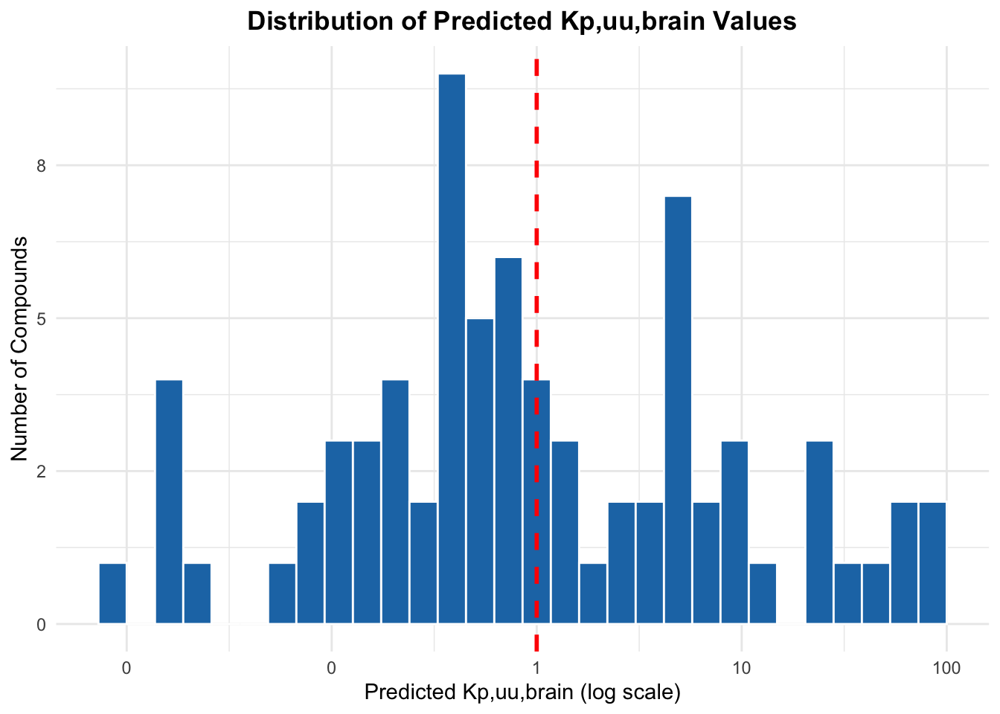
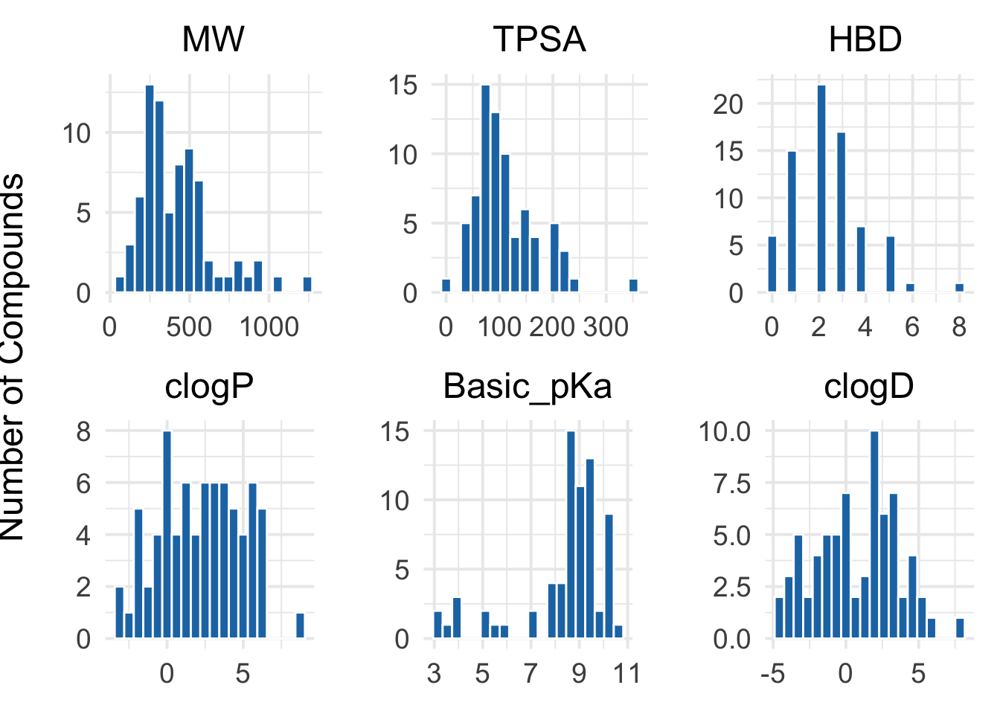
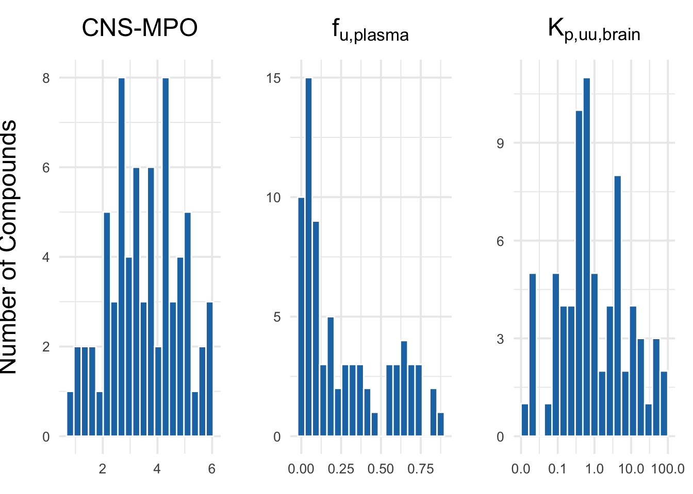
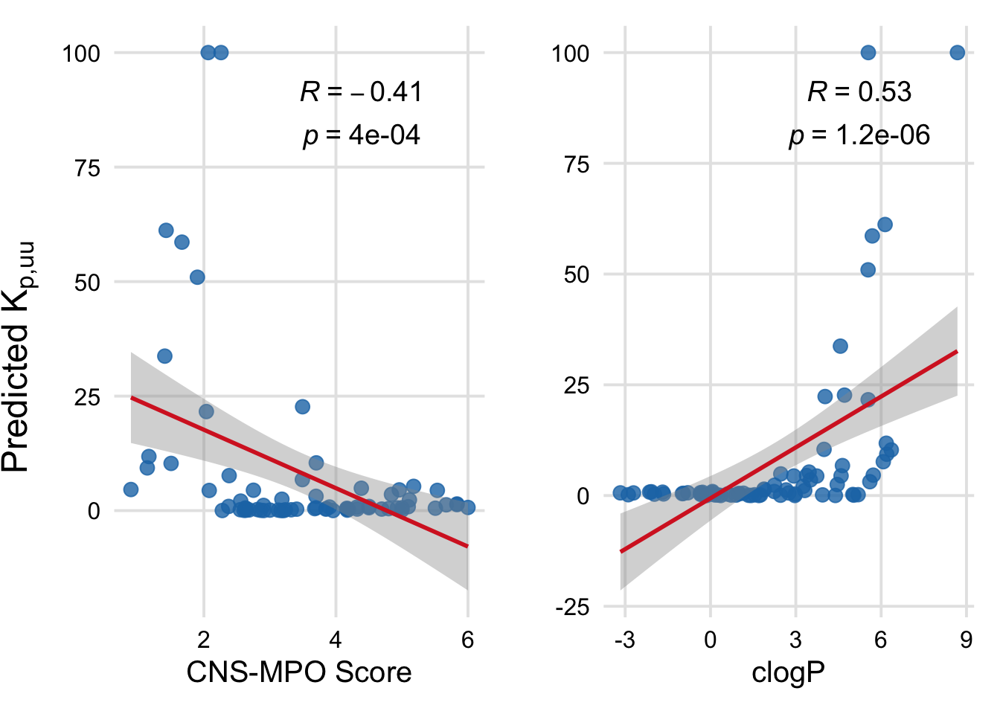
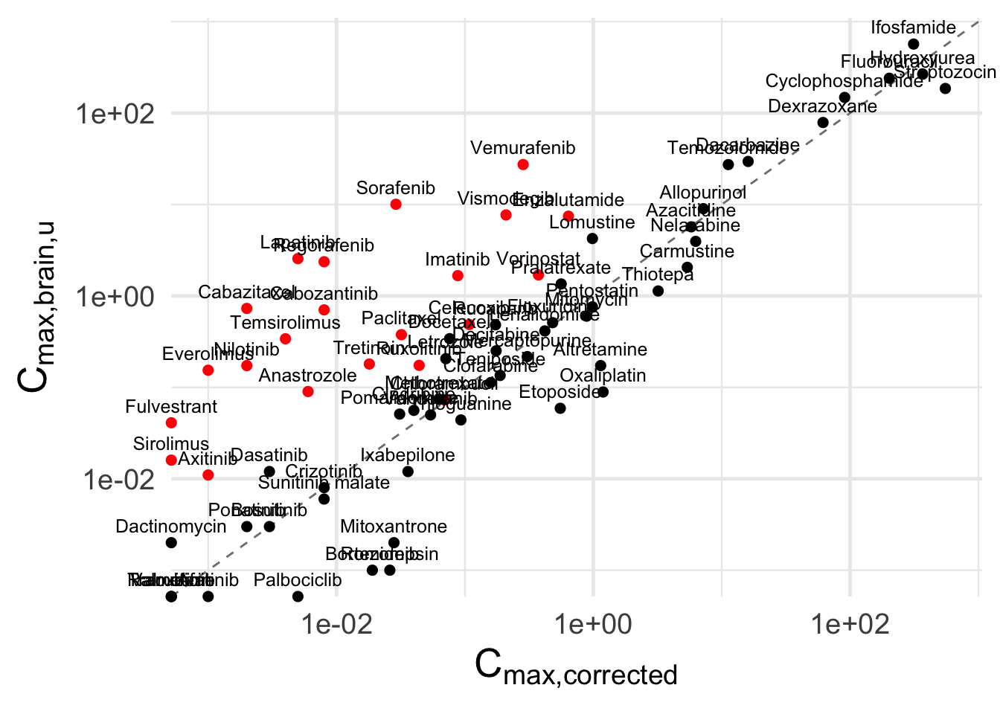
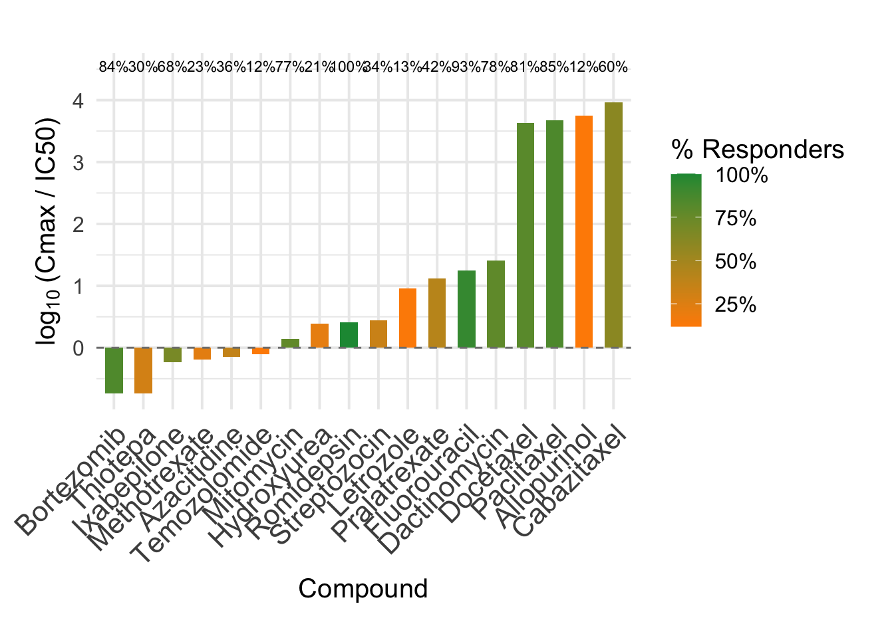
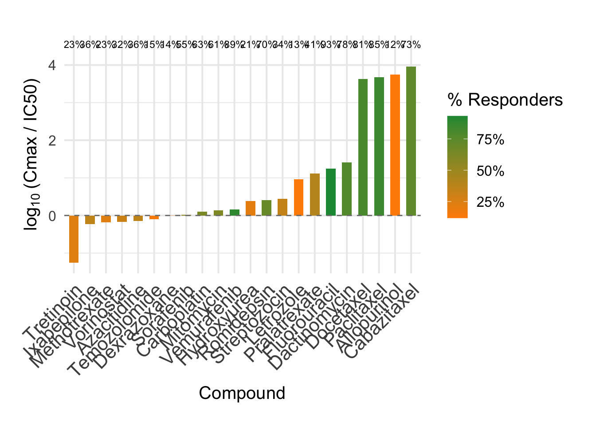
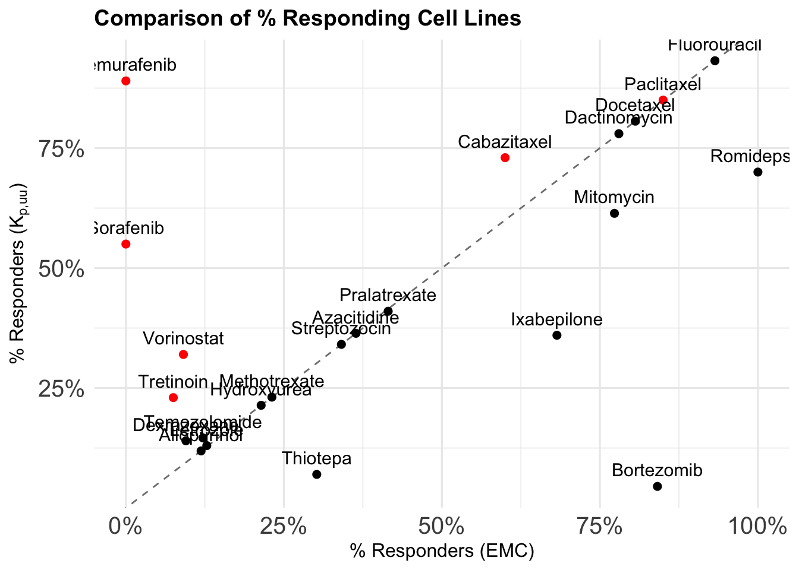
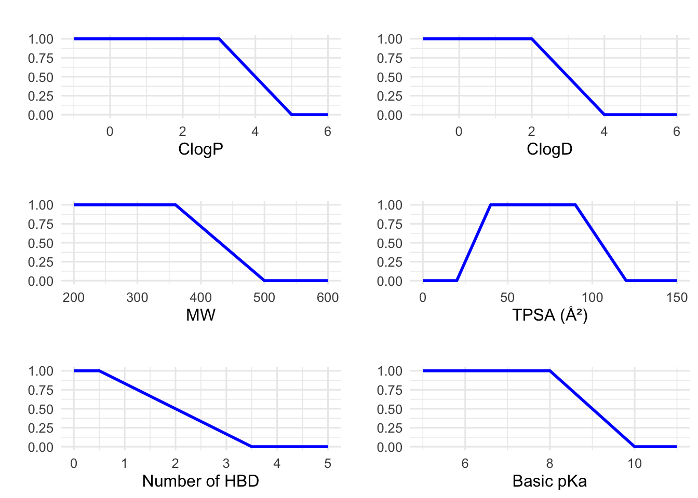
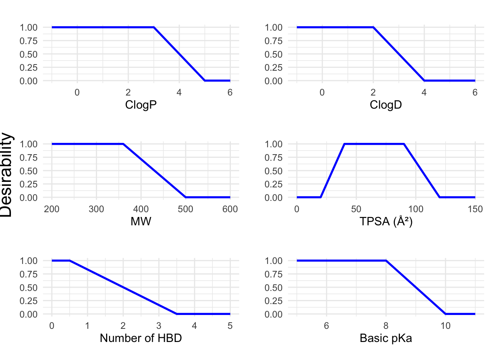

The following object is masked from 'package:gridExtra':
combine
The following objects are masked from 'package:stats':
filter, lag
The following objects are masked from 'package:base':
intersect, setdiff, setequal, union
Code
library(cowplot)
Attaching package: 'cowplot'
The following object is masked from 'package:patchwork':
align_plots
The following object is masked from 'package:ggpubr':
get_legend
2 Loading data
Code
# Read the CSV file into Rliston_compounds_exposure <-read.csv2("Liston_compounds_exposure_new.csv", stringsAsFactors =FALSE)liston_compounds_exposure$CNS_MPO <-NULLliston_compounds_desc <-read.csv("Liston_compounds_desc.csv")
3 Chapter 1: Liston compounds
3.1 Plotting distribution of predicted kp,uu,brain values
Code
kp_distr <-ggplot(liston_compounds_exposure, aes(x = kp_uu_brain)) +geom_histogram(bins =30, fill ="#1f77b4", color ="white") +scale_x_log10(labels = scales::label_number(accuracy =1)) +scale_y_continuous(labels = scales::label_number(accuracy =1)) +geom_vline(xintercept =1, linetype ="dashed", color ="red", size =1) +labs(title ="Distribution of Predicted Kp,uu,brain Values",x ="Predicted Kp,uu,brain (log scale)",y ="Number of Compounds" ) +theme_minimal() +theme(plot.title =element_text(hjust =0.5, face ="bold") )
Warning: Using `size` aesthetic for lines was deprecated in ggplot2 3.4.0.
ℹ Please use `linewidth` instead.
Code
print(kp_distr)

Code
# Save the combined plot as a high-resolution PNGggsave("kp_distribution.png",plot = kp_distr,width =12, # Width in inchesheight =6, # Height in inchesdpi =300, # High resolutionbg ="white") # Ensures background isn't transparent
3.2 Selecting compounds with predicted kp,uu,brain > 10
Code
# Filter compounds with Kp_uu_brain > 20high_kp_compounds <- liston_compounds_exposure[liston_compounds_exposure$kp_uu_brain >3, c("drug_name", "kp_uu_brain")]# Filter compounds with Kp_uu_brain > 20extreme_kp_compounds <- liston_compounds_exposure[liston_compounds_exposure$kp_uu_brain >10, c("drug_name", "kp_uu_brain")]# View the resultprint(high_kp_compounds)
# Merge the dataframes by compound namemerged_df <-merge(liston_compounds_exposure, liston_compounds_desc, by.x ="drug_name", by.y ="compound")
3.4 Plotting distribution of 6 main physicochemical descriptors calculated by RDKit
Code
# Define the six descriptorsdescriptors <-c("MW", "TPSA", "HBD", "clogP", "Basic_pKa", "clogD")# Function to generate a consistent histogram plotplot_descriptor <-function(df, column) {ggplot(df, aes_string(x = column)) +geom_histogram(bins =20, fill ="#1f77b4", color ="white") +theme_minimal(base_size =15) +labs(title = column, x =NULL, y ="") +theme(plot.title =element_text(hjust =0.5),axis.text =element_text(size =14) )}# Create individual plots as beforeplots <-lapply(descriptors, function(col) plot_descriptor(merged_df, col))
Warning: `aes_string()` was deprecated in ggplot2 3.0.0.
ℹ Please use tidy evaluation idioms with `aes()`.
ℹ See also `vignette("ggplot2-in-packages")` for more information.
Code
# Combine them into a 2x3 patchworkdescriptors_histograms <- (plots[[1]] | plots[[2]] | plots[[3]]) / (plots[[4]] | plots[[5]] | plots[[6]]) +plot_annotation(theme =theme(plot.title =element_text(size =18, face ="bold", hjust =0.5)))# Add global y-label using cowplot::ggdrawdescriptors_plot <-ggdraw(descriptors_histograms) +draw_label("Number of Compounds", x =0.01, y =0.5, angle =90, vjust =0.5, fontface ="plain", size =18)
Warning: Removed 4 rows containing non-finite outside the scale range
(`stat_bin()`).
Warning: Removed 4 rows containing non-finite outside the scale range
(`stat_bin()`).
Code
# Show plotprint(descriptors_plot)

Code
# Save plot with global y-axis labelggsave("descriptors_histograms.png",plot = descriptors_plot,width =12,height =8,dpi =300,bg ="white")
3.5 Plotting predicted CNS-MPO, fraction unbound and Kp,uu,brain
Code
# Define column names and custom titlescols <-c("CNS_MPO", "predicted_Fu", "kp_uu_brain")titles <-list(expression("CNS-MPO"),expression(f[u*","*plain("plasma")]),expression(K[p*","*plain("uu")*","*plain("brain")]))# Function to generate histogramsplot_hist <-function(data, col, title_expr) { p <-ggplot(data, aes_string(x = col)) +geom_histogram(bins =20, fill ="#1f77b4", color ="white") +theme_minimal(base_size =15) +labs(title = title_expr, x =NULL, y ="") +theme(plot.title =element_text(face ="bold", hjust =0.5),axis.text =element_text(size =10) )if (col =="kp_uu_brain") { p <- p +scale_x_log10(labels =label_number(accuracy =0.1)) }return(p)}# Create plotsplots <-mapply(function(col, title_expr) plot_hist(merged_df, col, title_expr), cols, titles, SIMPLIFY =FALSE)# Combine plots using patchworkpredictions_histograms <-wrap_plots(plots, ncol =3) +plot_annotation(theme =theme(plot.title =element_text(size =16, face ="bold", hjust =0.5)))# Add global y-axis label using cowplotpredictions_plot <-ggdraw(predictions_histograms) +draw_label("Number of Compounds", x =0.01, y =0.5, angle =90, vjust =0.5, size =18)
Warning: Removed 4 rows containing non-finite outside the scale range
(`stat_bin()`).
Code
# Show the final plotprint(predictions_plot)

Code
# Save with ggsaveggsave("predictions_histograms.png",plot = predictions_plot,width =12,height =6,dpi =300,bg ="white")
3.6 Comparing Liston fraction unbound vs. predicted fraction unbound
Code
# Fit linear modelmodel <-lm(fraction_unbound ~ predicted_Fu, data = merged_df)# Summary gives R-squared and significancesummary(model)
Call:
lm(formula = fraction_unbound ~ predicted_Fu, data = merged_df)
Residuals:
Min 1Q Median 3Q Max
-0.36115 -0.07410 -0.04113 0.01581 0.79399
Coefficients:
Estimate Std. Error t value Pr(>|t|)
(Intercept) 0.03132 0.03243 0.966 0.338
predicted_Fu 1.24192 0.09235 13.447 <2e-16 ***
---
Signif. codes: 0 '***' 0.001 '**' 0.01 '*' 0.05 '.' 0.1 ' ' 1
Residual standard error: 0.1947 on 68 degrees of freedom
(5 observations deleted due to missingness)
Multiple R-squared: 0.7267, Adjusted R-squared: 0.7227
F-statistic: 180.8 on 1 and 68 DF, p-value: < 2.2e-16
Code
# Remove rows with NA in either columncomplete_df <-na.omit(merged_df[, c("fraction_unbound", "predicted_Fu")])# Compute MSEmse <-mean((complete_df$fraction_unbound - complete_df$predicted_Fu)^2)print(paste("MSE:", round(mse, 4)))
[1] "MSE: 0.0487"
3.7 Correlating kp,uu,brain with CNS-MPO and clogP
Code
# Set theme for consistent lookcustom_theme <-theme_minimal(base_size =15) +theme(plot.title =element_text(face ="plain", hjust =0.5),axis.title =element_text(face ="plain"),axis.text =element_text(color ="black"),panel.grid.major =element_line(color ="grey90"),panel.grid.minor =element_blank() )# Optional: align y-axis range across both plots# y_lim <- c(min(merged_df$kp_uu_brain, na.rm = TRUE), max(merged_df$kp_uu_brain, na.rm = TRUE))# Plot 1: CNS_MPO vs kp_uu_brainplot1 <-ggplot(merged_df, aes(x = CNS_MPO, y = kp_uu_brain)) +geom_point(color ="#1f77b4", size =3, alpha =0.8) +geom_smooth(method ="lm", color ="#d62728", se =TRUE) +stat_cor(method ="pearson", label.x.npc ="middle", label.y.npc ="top", size =5, label.sep ="\n") +labs(x ="CNS-MPO Score", y ="" ) + custom_theme # + coord_cartesian(ylim = y_lim)# Plot 2: clogP vs kp_uu_brainplot2 <-ggplot(merged_df, aes(x = clogP, y = kp_uu_brain)) +geom_point(color ="#1f77b4", size =3, alpha =0.8) +geom_smooth(method ="lm", color ="#d62728", se =TRUE) +stat_cor(method ="pearson", label.x.npc ="middle", label.y.npc ="top", size =5, label.sep ="\n") +labs(x ="clogP", y ="" ) + custom_theme # + coord_cartesian(ylim = y_lim)# Combine and add spacingphys_vs_kp <- plot1 + plot2 +plot_layout(ncol =2, widths =c(1, 1)) # Add global y-axis label using cowplotphys_vs_kp_plot <-ggdraw(phys_vs_kp) +draw_label(expression("Predicted "*K[p*","*plain("uu")]), x =0.02, y =0.5, angle =90, vjust =0.5, size =18)
`geom_smooth()` using formula = 'y ~ x'
Warning: Removed 4 rows containing non-finite outside the scale range
(`stat_smooth()`).
Warning: Removed 4 rows containing non-finite outside the scale range
(`stat_cor()`).
Warning: Removed 4 rows containing missing values or values outside the scale range
(`geom_point()`).
`geom_smooth()` using formula = 'y ~ x'
Code
# Displayphys_vs_kp_plot

Code
# Save the combined plot as a high-resolution PNGggsave("physicochemical_vs_kpuu.png",plot = phys_vs_kp_plot,width =12, # Width in inchesheight =6, # Height in inchesdpi =300, # High resolutionbg ="white") # Ensures background isn't transparent
3.8 Physicochemical characteristics of outlier compounds
4 Chapter 2: Calculating brain concentration and brain exposure index
5 Plotting EMC corrected Cmax against unbound brain Cmax
Code
# Prepare data with color based on kp_uu_brainplot_df <- merged_df %>%filter(!drug_name %in%c("Busulfan", "Carboplatin", "Cisplatin", "Exemestane")) %>%mutate(dot_color =ifelse(kp_uu_brain >3, "red", "black"),label = drug_name )# Make the scatterplotscatter_plot_concentrations <-ggplot(plot_df, aes(x = unbound_brain_cmax_micromolar_emc,y = unbound_brain_cmax_micromolar_kp)) +# Add 1:1 diagonal linegeom_abline(slope =1, intercept =0, linetype ="dashed", color ="gray50") +# Add points with color depending on kp_uu_braingeom_point(aes(color = dot_color), size =2) +# Optional: Add labelsgeom_text(aes(label = label), vjust =-0.8, size =3.3) +# Manual color scalescale_color_identity() +coord_cartesian(clip ="off") +# Log10 scales for both axesscale_x_log10() +scale_y_log10() +labs(x =expression(C[max*","*plain("corrected")]),y =expression(C[max*","*plain("brain")*","*plain("u")]) ) +theme_minimal(base_size =18) +theme(axis.title.x =element_text(size =20),axis.title.y =element_text(size =20) )# Show the plotprint(scatter_plot_concentrations)
Warning in scale_x_log10(): log-10 transformation introduced infinite values.
Warning in scale_y_log10(): log-10 transformation introduced infinite values.
Warning in scale_x_log10(): log-10 transformation introduced infinite values.
Warning in scale_y_log10(): log-10 transformation introduced infinite values.

Code
# Save the combined plot as a high-resolution PNGggsave("concentrations_comparison.png",plot = scatter_plot_concentrations,width =12, # Width in inchesheight =8, # Height in inchesdpi =300, # High resolutionbg ="white") # Ensures background isn't transparent
Warning in scale_x_log10(): log-10 transformation introduced infinite values.
Warning in scale_y_log10(): log-10 transformation introduced infinite values.
6 Visualizing Brain Exposure (EMC approach)
Code
# Prepare the datapromising_df <- merged_df %>% dplyr::filter(responders_emc >0.1) %>% dplyr::mutate(drug_name =reorder(drug_name, log10(cmax_IC50_kp)),responders_emc_label = scales::percent(responders_emc, accuracy =1),valid_IC50_label = scales::percent(valid_IC50, accuracy =1) )# Compute label positionsy_label_pos <-max(log10(promising_df$cmax_IC50_kp), na.rm =TRUE) +0.5y_lim <- y_label_pos +1.2x_label_pos <-nrow(promising_df) -1+0.5exposure_plot_emc <-ggplot(promising_df, aes(x = drug_name)) +# Vertical barsgeom_col(aes(y =log10(cmax_IC50_kp), fill = responders_emc), width =0.6) +# Dashed line at exposure = IC50geom_hline(yintercept =0, linetype ="dashed", color ="gray50") +# responders_emc % text above each bargeom_text(aes(y = y_label_pos, label = responders_emc_label),vjust =0, size =3 ) +# Fill color scale for % responders_emcscale_fill_gradient(low ="#ff8c00", high ="#1a9641", name ="% Responders",labels = scales::percent_format(accuracy =1) ) +labs(x ="Compound",y =expression(log[10]~"(Cmax / IC50)") ) +theme_minimal(base_size =15) +theme(axis.text.x =element_text(size =16, angle =45, hjust =1),legend.position ="right",plot.margin =margin(t =30, r =20, b =20, l =20) ) +ylim(min(log10(promising_df$cmax_IC50_kp), na.rm =TRUE), 4.5)exposure_plot_emc

Code
# Save the combined plot as a high-resolution PNGggsave("exposure-efficacy-emc.png",plot = exposure_plot_emc,width =12, # Width in inchesheight =6, # Height in inchesdpi =300, # High resolutionbg ="white") # Ensures background isn't transparent
7 Visualizing Brain Exposure (Kp approach)
Code
# Prepare the datapromising_df <- merged_df %>% dplyr::filter(responders_kp >0.1) %>% dplyr::mutate(drug_name =reorder(drug_name, log10(cmax_IC50_kp)),responders_kp_label = scales::percent(responders_kp, accuracy =1),valid_IC50_label = scales::percent(valid_IC50, accuracy =1) )# Compute label positionsy_label_pos <-max(log10(promising_df$cmax_IC50_kp), na.rm =TRUE) +0.5y_lim <- y_label_pos +1.2x_label_pos <-nrow(promising_df) -1+0.5exposure_plot_kp <-ggplot(promising_df, aes(x = drug_name)) +# Vertical barsgeom_col(aes(y =log10(cmax_IC50_kp), fill = responders_kp), width =0.6) +# Dashed line at exposure = IC50geom_hline(yintercept =0, linetype ="dashed", color ="gray50") +# responders_kp % text above each bargeom_text(aes(y = y_label_pos, label = responders_kp_label),vjust =0, size =3 ) +# Fill color scale for % responders_kpscale_fill_gradient(low ="#ff8c00", high ="#1a9641", name ="% Responders",labels = scales::percent_format(accuracy =1) ) +labs(x ="Compound",y =expression(log[10]~"(Cmax / IC50)") ) +theme_minimal(base_size =15) +theme(axis.text.x =element_text(size =16, angle =45, hjust =1),legend.position ="right",plot.margin =margin(t =30, r =20, b =20, l =20) ) +ylim(min(log10(promising_df$cmax_IC50_kp), na.rm =TRUE), 4.5)exposure_plot_kp

Code
# Save the combined plot as a high-resolution PNGggsave("exposure-efficacy-kp.png",plot = exposure_plot_kp,width =12, # Width in inchesheight =6, # Height in inchesdpi =300, # High resolutionbg ="white") # Ensures background isn't transparent
8 Plotting percentage of responders EMC vs. Kp approach
Code
# Prepare the dataplot_df <- merged_df %>%filter(responders_emc >0.1| responders_kp >0.1) %>%mutate(dot_color =ifelse(kp_uu_brain >3, "red", "black"),label = drug_name )# Make the scatter plotscatter_plot_responders <-ggplot(plot_df, aes(x = responders_emc,y = responders_kp)) +# Add 1:1 diagonal linegeom_abline(slope =1, intercept =0, linetype ="dashed", color ="gray50") +# Add points with custom coloringgeom_point(aes(color = dot_color), size =2) +# Optional: Add labelsgeom_text(aes(label = label), vjust =-0.8, size =4) +# Manual color scale (red = high kp_uu_brain)scale_color_identity() +# Format % axesscale_x_continuous(labels =percent_format(accuracy =1)) +scale_y_continuous(labels =percent_format(accuracy =1)) +# Labels and themelabs(title ="Comparison of % Responding Cell Lines",x ="% Responders (EMC)",y =expression("% Responders ("*K[p*","*plain("uu")]*")") ) +theme_minimal(base_size =12) +theme(plot.title =element_text(face ="bold", size =14),axis.text =element_text(size =15) )# Show the plotprint(scatter_plot_responders)
Warning: Removed 1 row containing missing values or values outside the scale range
(`geom_point()`).
Warning: Removed 1 row containing missing values or values outside the scale range
(`geom_text()`).

Code
# Save the combined plot as a high-resolution PNGggsave("responders_comparison.png",plot = scatter_plot_responders,width =12, # Width in inchesheight =8, # Height in inchesdpi =300, # High resolutionbg ="white") # Ensures background isn't transparent
Warning: Removed 1 row containing missing values or values outside the scale range
(`geom_point()`).
Removed 1 row containing missing values or values outside the scale range
(`geom_text()`).
9 Plotting desirability ranges CNS-MPO parameters
Code
# -----------------------------# Define transformation functions# -----------------------------# For properties with a monotonic-decreasing transformation:monotonic_decreasing <-function(x, ideal, cutoff) {# x: numeric vector of property values# ideal: values <= ideal get a score of 1# cutoff: values >= cutoff get a score of 0 y <-rep(NA, length(x)) y[x <= ideal] <-1 y[x >= cutoff] <-0 middle <- (x > ideal) & (x < cutoff) y[middle] <- (cutoff - x[middle]) / (cutoff - ideal)return(y)}# For TPSA, which follows a hump function:hump_function_TPSA <-function(x, lower_cutoff, lower_ideal, upper_ideal, upper_cutoff) {# Returns 0 if x <= lower_cutoff or x >= upper_cutoff.# Returns 1 if x is between lower_ideal and upper_ideal.# And linearly interpolates between lower_cutoff->lower_ideal and upper_ideal->upper_cutoff. y <-rep(NA, length(x)) y[x <= lower_cutoff | x >= upper_cutoff] <-0 lower_region <- (x > lower_cutoff) & (x < lower_ideal) y[lower_region] <- (x[lower_region] - lower_cutoff) / (lower_ideal - lower_cutoff) ideal_region <- (x >= lower_ideal) & (x <= upper_ideal) y[ideal_region] <-1 upper_region <- (x > upper_ideal) & (x < upper_cutoff) y[upper_region] <- (upper_cutoff - x[upper_region]) / (upper_cutoff - upper_ideal)return(y)}# -----------------------------# Create data frames for each parameter with appropriate ranges:# -----------------------------# 1. ClogP: Ideal ≤3, cutoff ≥5.df_clogP <-data.frame(x =seq(-1, 6, by =0.1))df_clogP$desirability <-monotonic_decreasing(df_clogP$x, ideal =3, cutoff =5)# 2. ClogD: Ideal ≤2, cutoff ≥4.df_clogD <-data.frame(x =seq(-1, 6, by =0.1))df_clogD$desirability <-monotonic_decreasing(df_clogD$x, ideal =2, cutoff =4)# 3. Molecular Weight (MW): Ideal ≤360, cutoff ≥500.df_MW <-data.frame(x =seq(200, 600, by =5))df_MW$desirability <-monotonic_decreasing(df_MW$x, ideal =360, cutoff =500)# 4. TPSA: Hump function with lower cutoff 20, lower ideal 40, upper ideal 90, upper cutoff 120.df_TPSA <-data.frame(x =seq(0, 150, by =1))df_TPSA$desirability <-hump_function_TPSA(df_TPSA$x, lower_cutoff =20, lower_ideal =40, upper_ideal =90, upper_cutoff =120)# 5. HBD: Ideal ≤0.5, cutoff ≥3.5.df_HBD <-data.frame(x =seq(0, 5, by =0.1))df_HBD$desirability <-monotonic_decreasing(df_HBD$x, ideal =0.5, cutoff =3.5)# 6. Basic pKa: Ideal ≤8, cutoff ≥10.df_pKa <-data.frame(x =seq(5, 11, by =0.1))df_pKa$desirability <-monotonic_decreasing(df_pKa$x, ideal =8, cutoff =10)# -----------------------------# Generate plots using ggplot2:# -----------------------------p_clogP <-ggplot(df_clogP, aes(x = x, y = desirability)) +geom_line(size =1, color ="blue") +labs(title ="", x ="ClogP", y ="") +theme_minimal(base_size =12)p_clogD <-ggplot(df_clogD, aes(x = x, y = desirability)) +geom_line(size =1, color ="blue") +labs(title ="", x ="ClogD", y ="") +theme_minimal(base_size =12)p_MW <-ggplot(df_MW, aes(x = x, y = desirability)) +geom_line(size =1, color ="blue") +labs(title ="", x ="MW", y ="") +theme_minimal(base_size =12)p_TPSA <-ggplot(df_TPSA, aes(x = x, y = desirability)) +geom_line(size =1, color ="blue") +labs(title ="", x ="TPSA (Ų)", y ="") +theme_minimal(base_size =12)p_HBD <-ggplot(df_HBD, aes(x = x, y = desirability)) +geom_line(size =1, color ="blue") +labs(title ="", x ="Number of HBD", y ="") +theme_minimal(base_size =12)p_pKa <-ggplot(df_pKa, aes(x = x, y = desirability)) +geom_line(size =1, color ="blue") +labs(title ="", x ="Basic pKa", y ="") +theme_minimal(base_size =12)# -----------------------------# Arrange all plots in a grid# -----------------------------desirability_plot <-grid.arrange(p_clogP, p_clogD, p_MW, p_TPSA, p_HBD, p_pKa, ncol =2)

Code
# Add global y-axis label using cowplotdesirability_plot_final <-ggdraw(desirability_plot) +draw_label("Desirability", x =0.01, y =0.5, angle =90, vjust =0.5, size =18)# Displaydesirability_plot_final

Code
# Save the combined plot as a high-resolution PNGggsave("desirability_ranges.png",plot = desirability_plot_final,width =12, # Width in inchesheight =8, # Height in inchesdpi =300, # High resolutionbg ="white") # Ensures background isn't transparent
Source Code
---title: "GBM Brain Exposure"author: "Jack Pieters"date: todayformat: html: toc: true toc-depth: 2 number-sections: true code-fold: true code-tools: true theme: cosmoeditor: visual---# Load libraries```{r}# Load required librarieslibrary(ggplot2)library(ggpubr)library(ggrepel)library(gridExtra)library(scales)library(patchwork)library(dplyr)library(cowplot)```# Loading data```{r}# Read the CSV file into Rliston_compounds_exposure <-read.csv2("Liston_compounds_exposure_new.csv", stringsAsFactors =FALSE)liston_compounds_exposure$CNS_MPO <-NULLliston_compounds_desc <-read.csv("Liston_compounds_desc.csv")```# Chapter 1: Liston compounds## Plotting distribution of predicted kp,uu,brain values```{r}kp_distr <-ggplot(liston_compounds_exposure, aes(x = kp_uu_brain)) +geom_histogram(bins =30, fill ="#1f77b4", color ="white") +scale_x_log10(labels = scales::label_number(accuracy =1)) +scale_y_continuous(labels = scales::label_number(accuracy =1)) +geom_vline(xintercept =1, linetype ="dashed", color ="red", size =1) +labs(title ="Distribution of Predicted Kp,uu,brain Values",x ="Predicted Kp,uu,brain (log scale)",y ="Number of Compounds" ) +theme_minimal() +theme(plot.title =element_text(hjust =0.5, face ="bold") )print(kp_distr)# Save the combined plot as a high-resolution PNGggsave("kp_distribution.png",plot = kp_distr,width =12, # Width in inchesheight =6, # Height in inchesdpi =300, # High resolutionbg ="white") # Ensures background isn't transparent```## Selecting compounds with predicted kp,uu,brain > 10```{r}# Filter compounds with Kp_uu_brain > 20high_kp_compounds <- liston_compounds_exposure[liston_compounds_exposure$kp_uu_brain >3, c("drug_name", "kp_uu_brain")]# Filter compounds with Kp_uu_brain > 20extreme_kp_compounds <- liston_compounds_exposure[liston_compounds_exposure$kp_uu_brain >10, c("drug_name", "kp_uu_brain")]# View the resultprint(high_kp_compounds)# View the resultprint(extreme_kp_compounds)```## Merge dataframes```{r}# Merge the dataframes by compound namemerged_df <-merge(liston_compounds_exposure, liston_compounds_desc, by.x ="drug_name", by.y ="compound")```## Plotting distribution of 6 main physicochemical descriptors calculated by RDKit```{r}# Define the six descriptorsdescriptors <-c("MW", "TPSA", "HBD", "clogP", "Basic_pKa", "clogD")# Function to generate a consistent histogram plotplot_descriptor <-function(df, column) {ggplot(df, aes_string(x = column)) +geom_histogram(bins =20, fill ="#1f77b4", color ="white") +theme_minimal(base_size =15) +labs(title = column, x =NULL, y ="") +theme(plot.title =element_text(hjust =0.5),axis.text =element_text(size =14) )}# Create individual plots as beforeplots <-lapply(descriptors, function(col) plot_descriptor(merged_df, col))# Combine them into a 2x3 patchworkdescriptors_histograms <- (plots[[1]] | plots[[2]] | plots[[3]]) / (plots[[4]] | plots[[5]] | plots[[6]]) +plot_annotation(theme =theme(plot.title =element_text(size =18, face ="bold", hjust =0.5)))# Add global y-label using cowplot::ggdrawdescriptors_plot <-ggdraw(descriptors_histograms) +draw_label("Number of Compounds", x =0.01, y =0.5, angle =90, vjust =0.5, fontface ="plain", size =18)# Show plotprint(descriptors_plot)# Save plot with global y-axis labelggsave("descriptors_histograms.png",plot = descriptors_plot,width =12,height =8,dpi =300,bg ="white")```## Plotting predicted CNS-MPO, fraction unbound and Kp,uu,brain```{r}# Define column names and custom titlescols <-c("CNS_MPO", "predicted_Fu", "kp_uu_brain")titles <-list(expression("CNS-MPO"),expression(f[u*","*plain("plasma")]),expression(K[p*","*plain("uu")*","*plain("brain")]))# Function to generate histogramsplot_hist <-function(data, col, title_expr) { p <-ggplot(data, aes_string(x = col)) +geom_histogram(bins =20, fill ="#1f77b4", color ="white") +theme_minimal(base_size =15) +labs(title = title_expr, x =NULL, y ="") +theme(plot.title =element_text(face ="bold", hjust =0.5),axis.text =element_text(size =10) )if (col =="kp_uu_brain") { p <- p +scale_x_log10(labels =label_number(accuracy =0.1)) }return(p)}# Create plotsplots <-mapply(function(col, title_expr) plot_hist(merged_df, col, title_expr), cols, titles, SIMPLIFY =FALSE)# Combine plots using patchworkpredictions_histograms <-wrap_plots(plots, ncol =3) +plot_annotation(theme =theme(plot.title =element_text(size =16, face ="bold", hjust =0.5)))# Add global y-axis label using cowplotpredictions_plot <-ggdraw(predictions_histograms) +draw_label("Number of Compounds", x =0.01, y =0.5, angle =90, vjust =0.5, size =18)# Show the final plotprint(predictions_plot)# Save with ggsaveggsave("predictions_histograms.png",plot = predictions_plot,width =12,height =6,dpi =300,bg ="white")```## Comparing Liston fraction unbound vs. predicted fraction unbound ```{r}# Fit linear modelmodel <-lm(fraction_unbound ~ predicted_Fu, data = merged_df)# Summary gives R-squared and significancesummary(model)# Remove rows with NA in either columncomplete_df <-na.omit(merged_df[, c("fraction_unbound", "predicted_Fu")])# Compute MSEmse <-mean((complete_df$fraction_unbound - complete_df$predicted_Fu)^2)print(paste("MSE:", round(mse, 4)))```## Correlating kp,uu,brain with CNS-MPO and clogP```{r}# Set theme for consistent lookcustom_theme <-theme_minimal(base_size =15) +theme(plot.title =element_text(face ="plain", hjust =0.5),axis.title =element_text(face ="plain"),axis.text =element_text(color ="black"),panel.grid.major =element_line(color ="grey90"),panel.grid.minor =element_blank() )# Optional: align y-axis range across both plots# y_lim <- c(min(merged_df$kp_uu_brain, na.rm = TRUE), max(merged_df$kp_uu_brain, na.rm = TRUE))# Plot 1: CNS_MPO vs kp_uu_brainplot1 <-ggplot(merged_df, aes(x = CNS_MPO, y = kp_uu_brain)) +geom_point(color ="#1f77b4", size =3, alpha =0.8) +geom_smooth(method ="lm", color ="#d62728", se =TRUE) +stat_cor(method ="pearson", label.x.npc ="middle", label.y.npc ="top", size =5, label.sep ="\n") +labs(x ="CNS-MPO Score", y ="" ) + custom_theme # + coord_cartesian(ylim = y_lim)# Plot 2: clogP vs kp_uu_brainplot2 <-ggplot(merged_df, aes(x = clogP, y = kp_uu_brain)) +geom_point(color ="#1f77b4", size =3, alpha =0.8) +geom_smooth(method ="lm", color ="#d62728", se =TRUE) +stat_cor(method ="pearson", label.x.npc ="middle", label.y.npc ="top", size =5, label.sep ="\n") +labs(x ="clogP", y ="" ) + custom_theme # + coord_cartesian(ylim = y_lim)# Combine and add spacingphys_vs_kp <- plot1 + plot2 +plot_layout(ncol =2, widths =c(1, 1)) # Add global y-axis label using cowplotphys_vs_kp_plot <-ggdraw(phys_vs_kp) +draw_label(expression("Predicted "*K[p*","*plain("uu")]), x =0.02, y =0.5, angle =90, vjust =0.5, size =18)# Displayphys_vs_kp_plot# Save the combined plot as a high-resolution PNGggsave("physicochemical_vs_kpuu.png",plot = phys_vs_kp_plot,width =12, # Width in inchesheight =6, # Height in inchesdpi =300, # High resolutionbg ="white") # Ensures background isn't transparent```## Physicochemical characteristics of outlier compounds```{r}outlier_compounds_desc <- merged_df[merged_df$kp_uu_brain >10, c("drug_name", "MW", "TPSA", "HBD", "clogP", "Basic_pKa", "clogD", "CNS_MPO", "kp_uu_brain")]outlier_compounds_desc <- outlier_compounds_desc %>%mutate(across(where(is.numeric), ~round(.x, 2)))write.csv(outlier_compounds_desc, file="outlier_compounds_desc.csv", row.names =FALSE)```# Chapter 2: Calculating brain concentration and brain exposure index# Plotting EMC corrected Cmax against unbound brain Cmax```{r}# Prepare data with color based on kp_uu_brainplot_df <- merged_df %>%filter(!drug_name %in%c("Busulfan", "Carboplatin", "Cisplatin", "Exemestane")) %>%mutate(dot_color =ifelse(kp_uu_brain >3, "red", "black"),label = drug_name )# Make the scatterplotscatter_plot_concentrations <-ggplot(plot_df, aes(x = unbound_brain_cmax_micromolar_emc,y = unbound_brain_cmax_micromolar_kp)) +# Add 1:1 diagonal linegeom_abline(slope =1, intercept =0, linetype ="dashed", color ="gray50") +# Add points with color depending on kp_uu_braingeom_point(aes(color = dot_color), size =2) +# Optional: Add labelsgeom_text(aes(label = label), vjust =-0.8, size =3.3) +# Manual color scalescale_color_identity() +coord_cartesian(clip ="off") +# Log10 scales for both axesscale_x_log10() +scale_y_log10() +labs(x =expression(C[max*","*plain("corrected")]),y =expression(C[max*","*plain("brain")*","*plain("u")]) ) +theme_minimal(base_size =18) +theme(axis.title.x =element_text(size =20),axis.title.y =element_text(size =20) )# Show the plotprint(scatter_plot_concentrations)# Save the combined plot as a high-resolution PNGggsave("concentrations_comparison.png",plot = scatter_plot_concentrations,width =12, # Width in inchesheight =8, # Height in inchesdpi =300, # High resolutionbg ="white") # Ensures background isn't transparent```# Visualizing Brain Exposure (EMC approach)```{r}# Prepare the datapromising_df <- merged_df %>% dplyr::filter(responders_emc >0.1) %>% dplyr::mutate(drug_name =reorder(drug_name, log10(cmax_IC50_kp)),responders_emc_label = scales::percent(responders_emc, accuracy =1),valid_IC50_label = scales::percent(valid_IC50, accuracy =1) )# Compute label positionsy_label_pos <-max(log10(promising_df$cmax_IC50_kp), na.rm =TRUE) +0.5y_lim <- y_label_pos +1.2x_label_pos <-nrow(promising_df) -1+0.5exposure_plot_emc <-ggplot(promising_df, aes(x = drug_name)) +# Vertical barsgeom_col(aes(y =log10(cmax_IC50_kp), fill = responders_emc), width =0.6) +# Dashed line at exposure = IC50geom_hline(yintercept =0, linetype ="dashed", color ="gray50") +# responders_emc % text above each bargeom_text(aes(y = y_label_pos, label = responders_emc_label),vjust =0, size =3 ) +# Fill color scale for % responders_emcscale_fill_gradient(low ="#ff8c00", high ="#1a9641", name ="% Responders",labels = scales::percent_format(accuracy =1) ) +labs(x ="Compound",y =expression(log[10]~"(Cmax / IC50)") ) +theme_minimal(base_size =15) +theme(axis.text.x =element_text(size =16, angle =45, hjust =1),legend.position ="right",plot.margin =margin(t =30, r =20, b =20, l =20) ) +ylim(min(log10(promising_df$cmax_IC50_kp), na.rm =TRUE), 4.5)exposure_plot_emc# Save the combined plot as a high-resolution PNGggsave("exposure-efficacy-emc.png",plot = exposure_plot_emc,width =12, # Width in inchesheight =6, # Height in inchesdpi =300, # High resolutionbg ="white") # Ensures background isn't transparent```# Visualizing Brain Exposure (Kp approach)```{r}# Prepare the datapromising_df <- merged_df %>% dplyr::filter(responders_kp >0.1) %>% dplyr::mutate(drug_name =reorder(drug_name, log10(cmax_IC50_kp)),responders_kp_label = scales::percent(responders_kp, accuracy =1),valid_IC50_label = scales::percent(valid_IC50, accuracy =1) )# Compute label positionsy_label_pos <-max(log10(promising_df$cmax_IC50_kp), na.rm =TRUE) +0.5y_lim <- y_label_pos +1.2x_label_pos <-nrow(promising_df) -1+0.5exposure_plot_kp <-ggplot(promising_df, aes(x = drug_name)) +# Vertical barsgeom_col(aes(y =log10(cmax_IC50_kp), fill = responders_kp), width =0.6) +# Dashed line at exposure = IC50geom_hline(yintercept =0, linetype ="dashed", color ="gray50") +# responders_kp % text above each bargeom_text(aes(y = y_label_pos, label = responders_kp_label),vjust =0, size =3 ) +# Fill color scale for % responders_kpscale_fill_gradient(low ="#ff8c00", high ="#1a9641", name ="% Responders",labels = scales::percent_format(accuracy =1) ) +labs(x ="Compound",y =expression(log[10]~"(Cmax / IC50)") ) +theme_minimal(base_size =15) +theme(axis.text.x =element_text(size =16, angle =45, hjust =1),legend.position ="right",plot.margin =margin(t =30, r =20, b =20, l =20) ) +ylim(min(log10(promising_df$cmax_IC50_kp), na.rm =TRUE), 4.5)exposure_plot_kp# Save the combined plot as a high-resolution PNGggsave("exposure-efficacy-kp.png",plot = exposure_plot_kp,width =12, # Width in inchesheight =6, # Height in inchesdpi =300, # High resolutionbg ="white") # Ensures background isn't transparent```# Plotting percentage of responders EMC vs. Kp approach```{r}# Prepare the dataplot_df <- merged_df %>%filter(responders_emc >0.1| responders_kp >0.1) %>%mutate(dot_color =ifelse(kp_uu_brain >3, "red", "black"),label = drug_name )# Make the scatter plotscatter_plot_responders <-ggplot(plot_df, aes(x = responders_emc,y = responders_kp)) +# Add 1:1 diagonal linegeom_abline(slope =1, intercept =0, linetype ="dashed", color ="gray50") +# Add points with custom coloringgeom_point(aes(color = dot_color), size =2) +# Optional: Add labelsgeom_text(aes(label = label), vjust =-0.8, size =4) +# Manual color scale (red = high kp_uu_brain)scale_color_identity() +# Format % axesscale_x_continuous(labels =percent_format(accuracy =1)) +scale_y_continuous(labels =percent_format(accuracy =1)) +# Labels and themelabs(title ="Comparison of % Responding Cell Lines",x ="% Responders (EMC)",y =expression("% Responders ("*K[p*","*plain("uu")]*")") ) +theme_minimal(base_size =12) +theme(plot.title =element_text(face ="bold", size =14),axis.text =element_text(size =15) )# Show the plotprint(scatter_plot_responders)# Save the combined plot as a high-resolution PNGggsave("responders_comparison.png",plot = scatter_plot_responders,width =12, # Width in inchesheight =8, # Height in inchesdpi =300, # High resolutionbg ="white") # Ensures background isn't transparent```# Plotting desirability ranges CNS-MPO parameters```{r}# -----------------------------# Define transformation functions# -----------------------------# For properties with a monotonic-decreasing transformation:monotonic_decreasing <-function(x, ideal, cutoff) {# x: numeric vector of property values# ideal: values <= ideal get a score of 1# cutoff: values >= cutoff get a score of 0 y <-rep(NA, length(x)) y[x <= ideal] <-1 y[x >= cutoff] <-0 middle <- (x > ideal) & (x < cutoff) y[middle] <- (cutoff - x[middle]) / (cutoff - ideal)return(y)}# For TPSA, which follows a hump function:hump_function_TPSA <-function(x, lower_cutoff, lower_ideal, upper_ideal, upper_cutoff) {# Returns 0 if x <= lower_cutoff or x >= upper_cutoff.# Returns 1 if x is between lower_ideal and upper_ideal.# And linearly interpolates between lower_cutoff->lower_ideal and upper_ideal->upper_cutoff. y <-rep(NA, length(x)) y[x <= lower_cutoff | x >= upper_cutoff] <-0 lower_region <- (x > lower_cutoff) & (x < lower_ideal) y[lower_region] <- (x[lower_region] - lower_cutoff) / (lower_ideal - lower_cutoff) ideal_region <- (x >= lower_ideal) & (x <= upper_ideal) y[ideal_region] <-1 upper_region <- (x > upper_ideal) & (x < upper_cutoff) y[upper_region] <- (upper_cutoff - x[upper_region]) / (upper_cutoff - upper_ideal)return(y)}# -----------------------------# Create data frames for each parameter with appropriate ranges:# -----------------------------# 1. ClogP: Ideal ≤3, cutoff ≥5.df_clogP <-data.frame(x =seq(-1, 6, by =0.1))df_clogP$desirability <-monotonic_decreasing(df_clogP$x, ideal =3, cutoff =5)# 2. ClogD: Ideal ≤2, cutoff ≥4.df_clogD <-data.frame(x =seq(-1, 6, by =0.1))df_clogD$desirability <-monotonic_decreasing(df_clogD$x, ideal =2, cutoff =4)# 3. Molecular Weight (MW): Ideal ≤360, cutoff ≥500.df_MW <-data.frame(x =seq(200, 600, by =5))df_MW$desirability <-monotonic_decreasing(df_MW$x, ideal =360, cutoff =500)# 4. TPSA: Hump function with lower cutoff 20, lower ideal 40, upper ideal 90, upper cutoff 120.df_TPSA <-data.frame(x =seq(0, 150, by =1))df_TPSA$desirability <-hump_function_TPSA(df_TPSA$x, lower_cutoff =20, lower_ideal =40, upper_ideal =90, upper_cutoff =120)# 5. HBD: Ideal ≤0.5, cutoff ≥3.5.df_HBD <-data.frame(x =seq(0, 5, by =0.1))df_HBD$desirability <-monotonic_decreasing(df_HBD$x, ideal =0.5, cutoff =3.5)# 6. Basic pKa: Ideal ≤8, cutoff ≥10.df_pKa <-data.frame(x =seq(5, 11, by =0.1))df_pKa$desirability <-monotonic_decreasing(df_pKa$x, ideal =8, cutoff =10)# -----------------------------# Generate plots using ggplot2:# -----------------------------p_clogP <-ggplot(df_clogP, aes(x = x, y = desirability)) +geom_line(size =1, color ="blue") +labs(title ="", x ="ClogP", y ="") +theme_minimal(base_size =12)p_clogD <-ggplot(df_clogD, aes(x = x, y = desirability)) +geom_line(size =1, color ="blue") +labs(title ="", x ="ClogD", y ="") +theme_minimal(base_size =12)p_MW <-ggplot(df_MW, aes(x = x, y = desirability)) +geom_line(size =1, color ="blue") +labs(title ="", x ="MW", y ="") +theme_minimal(base_size =12)p_TPSA <-ggplot(df_TPSA, aes(x = x, y = desirability)) +geom_line(size =1, color ="blue") +labs(title ="", x ="TPSA (Ų)", y ="") +theme_minimal(base_size =12)p_HBD <-ggplot(df_HBD, aes(x = x, y = desirability)) +geom_line(size =1, color ="blue") +labs(title ="", x ="Number of HBD", y ="") +theme_minimal(base_size =12)p_pKa <-ggplot(df_pKa, aes(x = x, y = desirability)) +geom_line(size =1, color ="blue") +labs(title ="", x ="Basic pKa", y ="") +theme_minimal(base_size =12)# -----------------------------# Arrange all plots in a grid# -----------------------------desirability_plot <-grid.arrange(p_clogP, p_clogD, p_MW, p_TPSA, p_HBD, p_pKa, ncol =2)# Add global y-axis label using cowplotdesirability_plot_final <-ggdraw(desirability_plot) +draw_label("Desirability", x =0.01, y =0.5, angle =90, vjust =0.5, size =18)# Displaydesirability_plot_final# Save the combined plot as a high-resolution PNGggsave("desirability_ranges.png",plot = desirability_plot_final,width =12, # Width in inchesheight =8, # Height in inchesdpi =300, # High resolutionbg ="white") # Ensures background isn't transparent```